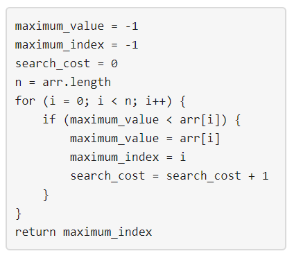

1420. 生成数组
DP：dp[t][j] = 已放若干个数、代价 t、最大值恰为 j 的方案数；逐位转移，j 维前缀和优化。
思路
- 第一个数必计 1 次开销，所以
k=0或k>n直接返回 0；初始dp[1][j] = 1。 - 放新数 ≤ 当前最大：
j种取值，状态不变 →dp[t][j] * j。 - 放新数恰为
j（新最大）：代价 +1，旧最大在1..j-1→ 用前缀和把上一行一次累进来。 - 答案 = 最终
dp[k][1..m]求和；全程对1e9+7取模，long防乘法溢出。
图解
最优解
1class Solution {2 public int numOfArrays(int n, int m, int k) {3 if (k == 0 || k > n) return 0; // 第一个数必计 1 次开销，代价最少是 14 final int MOD = 1_000_000_007;5 // dp[t][j]：已放完一段前缀、代价为 t、当前最大值恰为 j 的方案数6 long[][] dp = new long[k + 1][m + 1];7 for (int j = 1; j <= m; j++) dp[1][j] = 1; // 第一个数：自己就是最大值，代价 18 for (int i = 2; i <= n; i++) {9 long[][] ndp = new long[k + 1][m + 1];10 for (int t = 1; t <= k; t++) {11 long pre = 0; // 扫过的 dp[t-1][1..j-1] 之和12 for (int j = 1; j <= m; j++) {13 // 新数 ≤ 当前最大：j 种取值，最大值和代价都不变14 ndp[t][j] = dp[t][j] * j % MOD;15 // 新数恰为 j：它比旧最大值大，代价 +1；旧最大可以是 1..j-116 ndp[t][j] = (ndp[t][j] + pre) % MOD;17 pre += dp[t - 1][j];18 if (pre >= MOD) pre -= MOD;19 }20 }21 dp = ndp;22 }23 long ans = 0;24 for (int j = 1; j <= m; j++) ans = (ans + dp[k][j]) % MOD;25 return (int) ans;26 }27}题目
给定三个整数 n、m 和 k 。考虑使用下图描述的算法找出正整数数组中最大的元素。

请你构建一个具有以下属性的数组 arr ：
arr中包含确切的n个整数。1 <= arr[i] <= m其中(0 <= i < n)。- 将上面提到的算法应用于
arr之后，search_cost的值等于k。
返回在满足上述条件的情况下构建数组 arr 的 方法数量 ，由于答案可能会很大，所以 必须 对 10^9 + 7 取余。
示例 1：
输入：n = 2, m = 3, k = 1 输出：6 解释：可能的数组分别为 [1, 1], [2, 1], [2, 2], [3, 1], [3, 2] [3, 3]
示例 2：
输入：n = 5, m = 2, k = 3 输出：0 解释：没有数组可以满足上述条件
示例 3：
输入：n = 9, m = 1, k = 1 输出：1 解释：唯一可能的数组是 [1, 1, 1, 1, 1, 1, 1, 1, 1]
提示：
1 <= n <= 501 <= m <= 1000 <= k <= n
题面取自力扣当前版本。
数据快照 2026-11-04。题面版权归力扣所有，本站点仅供本人学习使用，请勿对外发布。